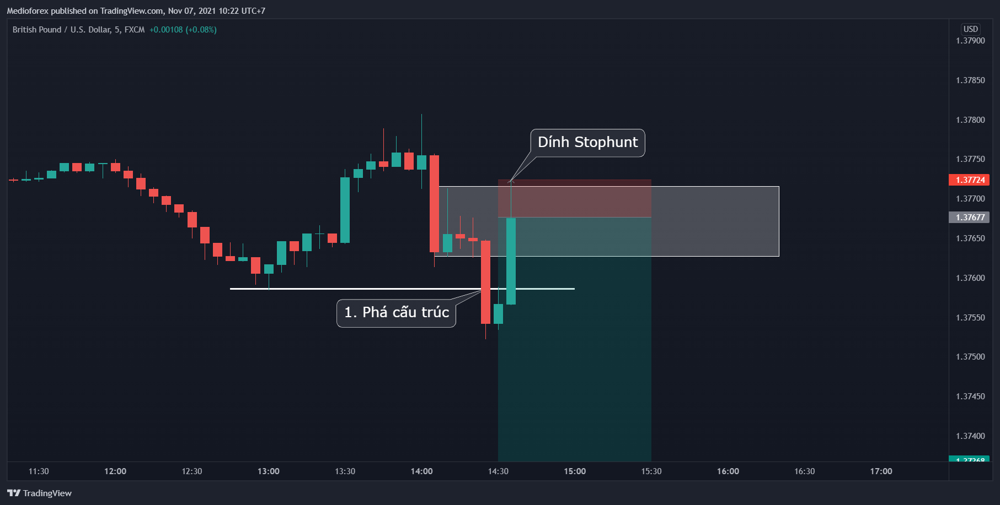
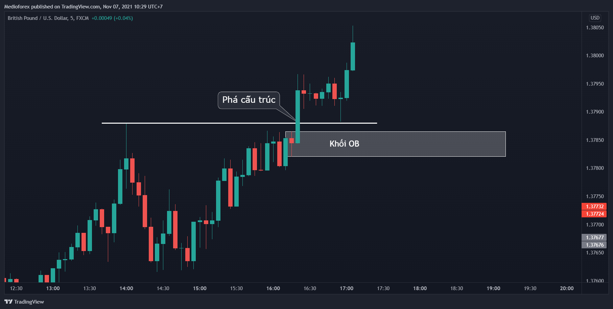

Chào các bạn, tiếp tục đến bài tiếp theo của mình trong chuỗi xác định khối Order Block nhé.
Ở bài trước chúng ta đã biết cách xác định khối Order Block một cách hơi máy móc kèm theo 1 câu hỏi gây hoang mang ở cuối bài đó.
Đó là cách chuyển tập gây kích thích và sự tò mò mà mình học được của mấy ông đạo diễn làm phim nhiều tập. Xin lỗi mọi người vì mình áp dụng vào trong đây 
Bài hôm nay cùng mình đi vào việc xác định và chọn khối OB nên trade và không nên trade.
BẮT ĐẦU NHÉ
1. Bản chất của khối Order Block
Bản chất của khối Order Block có thể định nghĩa là vùng giá mà nơi đó chính là nơi “giãy chết” cuối cùng của bên yếu thế trước khi bên mạnh đẩy giá phá khỏi đỉnh, đáy trước đó.
Từ định nghĩa đó chúng ta mới có cách xác định khối Order Block là cây nến khác màu cuối cùng trước khi giá phá đỉnh, đáy trước đó.
Nhiều người sẽ có định nghĩa theo cách khác về nơi vào lệnh của Bank, Market Maker. Bạn cứ chọn định nghĩa nào bạn thấy thích. Mình muốn giải thích mọi thứ theo cung cầu, vì về cơ bản nguồn Smart Money cũng chỉ là nguồn tiền đưa vào thị trường ở một thời điểm thích hợp để thay đổi cung cầu mà thôi.
 Và nếu giải thích 1 cách hình tượng cụ thể hóa của khối Order Block thì có thể so sánh với hình ảnh “kéo co” trong phim Squid Game. Chắc mọi người đều xem rồi.
Và nếu giải thích 1 cách hình tượng cụ thể hóa của khối Order Block thì có thể so sánh với hình ảnh “kéo co” trong phim Squid Game. Chắc mọi người đều xem rồi.
Giải thích theo kiểu hình tượng cụ thể hóa từ trò kéo co - Squid Game
Trong phân đoạn kéo co đó thì khi team của nhân vật chính dùng chiến thuật “giả vờ thua”. Tiến 3 bước để lùi nhiều bước.
Làm vậy khiến team bên kia đang tưởng thắng thì bị mất đà.
Từ thời điểm bị mất đà bị ngã đó trở đi là thế trận hoàn toàn trở thành 1 chiều cho team nhân vật chính, team nhân vật chính dùng full nộ để kéo “đẩy giá 1 mạch phá đỉnh” 1 mạch.
Vậy thì Order Block chính là khoảng thời gian tính từ lúc team nhân vật chính tiến 3 bước làm team kia bị mất đà đến thời điểm thế trận bắt đầu trở thành 1 chiều cho team chính.
Khi team bên kia đã trượt dài ( mất cấu trúc) thì team nhân vật chính lại có thời gian để ổn định lại đội hình ( hình thành lại cấu trúc) nên càng tạo ra sức mạnh lớn dù trước đó team nhân vật chính rất yếu.
Tương tự như việc giao dịch khi tác động Smart Money hình thành cấu trúc ở khung nhỏ rồi các Trader trade theo khung nhỏ sẽ thúc đẩy tạo cấu trúc mới ở khung lớn.
Điều đó mới sinh ra định nghĩa Order Block là cây nến khác màu cuối cùng trước khi giá phá đỉnh (đáy) trước đó. Tuy nó đúng cho nhiều trường hợp nhưng chưa đủ vì nhiều khi nến cùng màu cũng có thể là Order Block.
Mình sẽ lấy ví dụ 1 kèo mà nhiều anh em hội quán đã ăn được và đã được chia sẻ lại là kèo GU hôm mùng 01/11/2021
Khối OB giờ nó nằm lại nằm ở râu nến của cây pinbar đỏ. Nếu theo định nghĩa cây nến khác màu cuối cùng thì chỗ đó không phải là Order Block mà Order Block sẽ nằm ở trên đỉnh.
Nhưng nếu xác định khối OB theo bản chất thì râu nến của cây pinbar đó là nơi “giãy chết” cuối cùng của bên mua trước khi xảy ra thế trận 1 chiều, bên bán đẩy giá phá đáy 1 mạch. Vì thế chỗ râu đó cũng là Order Block. (Nhớ chúng ta theo Price action là luôn để ý cả râu nến nhé)
Đến đoạn này anh em mới theo sẽ thấy hơi hoang mang vì nếu như này thì khi trade làm sao phân biệt và để ý được những trường hợp kiểu này.
Thế thì điều này sẽ được giải quyết bằng 2 cách
-
Cách 1: Trade lâu lên kinh nghiệm tự khắc sẽ thấy.
Kiểu như giờ đưa mình 1 cái túi chị em hàng fake bảo mình phân biệt là thật hay giả thì mình chịu. Kể cả để 2 cái cạnh nhau mình cũng chả biết cái nào real, cái nào fake. Nhưng tín đồ thời trang thì cầm lên là nhận ra ngay. -
Cách 2: Hãy luôn nhìn nhiều timeframe trước khi đặt lệnh
Làm vậy để thấy được câu chuyện ẩn cũng như nhìn mọi thứ được khách quan hơn. Kiếm tìm 1 sự đồng nhất.
Việc nhìn nhiều timeframe thì trade kiểu gì cũng phải làm nhưng mình vẫn cần phải nhắc sợ mọi người quên.
Timeframe nhỏ hơn thì nó trông như này. Giờ thì khối OB lại đúng theo định nghĩa cây nến khác màu cuối cùng rồi.
Vậy là chúng ta đã qua được bản chất của việc xác định khối Order Block. Giờ thì cùng mình đi vào việc xác định khối OB nào nên trade và khối OB nào không nên trade.
2. Khối Order Block nào nên trade và không nên trade
Những điều mình sắp viết từ giờ đến cuối bài này hoàn toàn dựa vào kinh nghiệm của mình. Nó không phải SGK nên mọi người cân nhắc làm theo nhé.
Mình không phải là 1 người trade thuần theo SMC. Nên cách trade của mình sẽ khác những người trade thuần 1 chút. Với cá nhân mình thì mình chia khối Order Block làm 2 loại:
-
Khối Order Block đã được dùng.
-
Khối Order Block chưa được dùng.
Hoặc có thể gọi là khối OB mạnh, OB yếu hoặc là OB đẹp, OB xấu. Ai thích gọi kiểu nào hợp với bản thân nhất thì gọi. Mình thì lại lựa chọn cách gọi khối OB đã được dùng và khối OB chưa được dùng để bản thân cảm thấy nó hay và sống động hơn
Nhưng giờ hãy tạm dừng nói về Order Block mà cùng mình đi nhanh qua định nghĩa và cách xác định 1 thứ nó liên quan đến việc xác định 1 khối OB tốt. Đó là vùng mất cân bằng tiếng anh đọc là imbalance (IMB)
2.1 . Định nghĩa Imbalance và cách xác định
1. Định nghĩa
Imbalance là vùng mất cân bằng cung cầu trên thị trường hay thiếu thanh khoản. Khi đó giá sẽ có xu hướng quay lại các vùng mất cân bằng này để khớp các lệnh chưa được khớp đã được để lại.
2. Cách xác định
Cách xác định Imbalance trên đồ thị thì rất đơn giản. Trong 3 cây nến liên tiếp 1,2,3
Thì trong 1 hướng giá giảm, Imbalance chính là khoảng trống được tạo ra từ điểm thấp nhất của nến 1 tới điểm cao nhất của nến 3.
Trong 1 hướng giá tăng , Imbalance chính là khoảng trống được tạo ra từ điểm cao nhất của nến 1 tới điểm thấp nhất của nến 3.
Cái này thì chỉ là khái niệm thôi không có gì trong này cả. Vào 1 vài ví dụ cho quen luôn nhé.
Đấy là cách xác định Imbalance. Giờ thì quay trở lại nội dung chính là khối OB nào nên trade và không nên trade nhé.
2.2. Khối Order Block nào nên trade và không nên trade
Với mình khối OB nên trade là khối OB chưa được sử dụng. Vậy khối OB đó cần điều kiện gì? Thì nó cần có những điều kiện sau:
- Sau OB có imbalance
- Sau OB là 1 động thái đẩy mạnh giá
- OB sau khi tạo lực đẩy phải phá cấu trúc của xu hướng
- OB nên là mô hình nến Engulfing
Cái này mình lấy luôn comment của bạn @ain cho nhanh
Tất nhiên không phải lúc nào cũng gặp trường hợp mà thỏa mãn tất cả các điều kiện cùng lúc được. Nên để giản lược hóa, với mình điều kiện đầu tiên là “Sau OB có Imbalance” là điều kiện luôn cần có. Thêm được những điều kiện tiếp theo thì khối OB đó càng đẹp càng tốt hơn.
 Và với việc sau khối OB có imbalance (IMB) thì mình gọi đó là khối OB chưa được sử dụng và nên trade.
Và với việc sau khối OB có imbalance (IMB) thì mình gọi đó là khối OB chưa được sử dụng và nên trade.
Còn những khối OB còn lại (không có Imbalance) mình gọi là OB đã được sử dụng và hạn chế trade. (Trade vẫn được nhưng tỉ lệ thắng nó thấp hơn, cũng như cần có thêm kinh nghiệm)
Đến đây chắc hẳn bạn sẽ đặt câu hỏi là: Khối OB có Imbalance có gì đặc biệt mà mình lại bảo là nên trade?
Lý do là qua việc backtest nhiều lần, cũng như trade real thì với mình cho kết quả rằng những khối OB có Imbalance thì giá chạm vào tỉ lệ bật lại cực kì cao. Việc bật lại đó có thể chưa giúp bạn đạt TP (Vì TP còn liên quan đến cấu trúc thị trường) nhưng nó giúp bạn có cơ hội quản lý lệnh khiến lệnh đó khó SL hơn. Và đây chính là ưu điểm lớn thứ 2 của khối OB.
Tổng kết
Tổng kết có 2 ưu điểm của khối OB nó ưu việt hơn cái việc xác định keylevel mà mình nhận được.
-
Định lượng rõ ràng khoảng cách đặt SL, giúp tối ưu RR và giảm khả năng bị Stophunt
-
Chỉ trade khối OB chưa sử dụng (OB có Imbalance) giúp giảm tỉ lệ SL đi rất nhiều. Vì giá chạm vào đó thì hay bật lại đủ quản lý lệnh, dời SL.
Tất nhiên OB đã được sử dụng (OB không có Imbalance) thì không phải giá không bật lại, không phản ứng tại đó. Chỉ là tỉ lệ nó phản ứng ít hơn nhiều 1 khối OB chưa được sử dụng mà thôi.
Thế nên mình nghĩ chúng ta cứ làm việc dễ trước bằng cách chỉ tìm cơ hội trade ở khối OB có Imbalance. Giỏi hơn thì tìm thêm cả cơ hội ở những khối OB không có Imbalance sau.
Ví dụ biểu đồ
Chỗ lý thuyết trên viết ra dài nhưng thực ra tổng kết lại nó ngắn tí à. Mình viết dài để anh em mới tiếp cận thấy dễ hiểu hơn. Giờ đi vào ví dụ để hiểu rõ hơn nhé
Ví dụ 1
Và sau khối OB này có Imbalance
Vì thế với mình khối Order Block này chưa được sử dụng do nó có Imbalance. Thêm nữa nó thỏa mãn tất cả điều kiện của 1 khối OB đẹp. Vì thế nếu bạn muốn bán thì đây là nơi cần chú ý và có thể bán được.
Giá đi lên chạm khối OB chưa được sử dụng rồi đi xuống. Thời điểm nó chạm khối OB thì mình cho rằng nó đã được sử dụng và lần sau giá có lên mình cũng sẽ không bán nữa.
Cái này giống kiểu giá retest Keylevel 1 lần rồi mà retest lần nữa là mình cũng không vào lệnh nữa ý
Ví dụ 2
Tiếp tục lại là khối OB chưa được sử dụng và có thể trade được. Nếu xét cấu trúc mà cho rằng giá xuống. Bạn muốn bán thì có thể bán được ở đây.
Bình thường khối nhỏ thì mình đặt lệnh ở đầu khối OB. SL ở cuối khối OB. Nhưng khối to như này đặt lệnh vậy SL lớn nên RR không tối ưu vì thế có thể đặt lệnh ở giữa khối, SL ở cuối khối.
Kết quả là dính Stophunt

Dù rằng khối OB có thể tránh bị stophunt nhưng không phải 100%. Và stophunt của khối OB nó chỉ chơm chớm vậy thôi chứ không giống kiểu stophunt dài như keylevel. Nên nếu lệnh bạn có tỉ lệ RR lớn hơn bằng 5 và cho rằng đây là stophunt thì có thể đặt luôn 1 lệnh nữa sau khi bị stophunt nhé.
Kết quả giá phản ứng rồi đi xuống

Ví dụ 3

Nếu bạn phân tích như nào đó mà cho rằng giá vẫn tăng thì giá về OB này có thể mua lên
Kết quả
Kết quả giá không tăng như kì vọng nhưng cũng đủ để bạn quản lý lệnh (chốt 1/2, dời SL) trước khi chạm SL. Trước khi giá quay về SL thì cũng được ~4R.
Ví dụ 4
Thế nên trong trường hợp này kể cả mình có xác định giá tăng tiếp thì mình cũng sẽ không mua tại khối OB đã được sử dụng này mà chọn 1 cơ hội khác. Như mua tại KLQT đặt SL xa ra, hoặc tìm khối OB nào chưa được sử dụng…
Tổng kết lần cuối
Đó là cách mình xác định khối OB nào nên xài và khối OB nào không nên xài. Và đó cũng chính là câu trả lời cho câu hỏi kết thúc ở bài trước (Bài 2)
Vẫn còn vài câu chuyện hay ho ở mấy cái khối OB này nhưng hãy để ở những bài tiếp theo nhé.